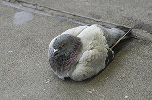
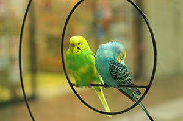

鳩

鳩とは・・・鳩目鳩科に属する鳥類の総称。
街で多く見かけられ、平和の象徴とされています。鳩に餌をやるのはやめましょう。
猫
 野良猫もいますが、飼われている猫も一匹で散歩に行くそうです。
野良猫もいますが、飼われている猫も一匹で散歩に行くそうです。
インコ
 鳥かごから逃げ出した。籠の中は狭かった。うつろな目で見つめる空は格子で遮られていた。
カメ
カメはのんびりしています。水辺にすみますが、爬虫類です。